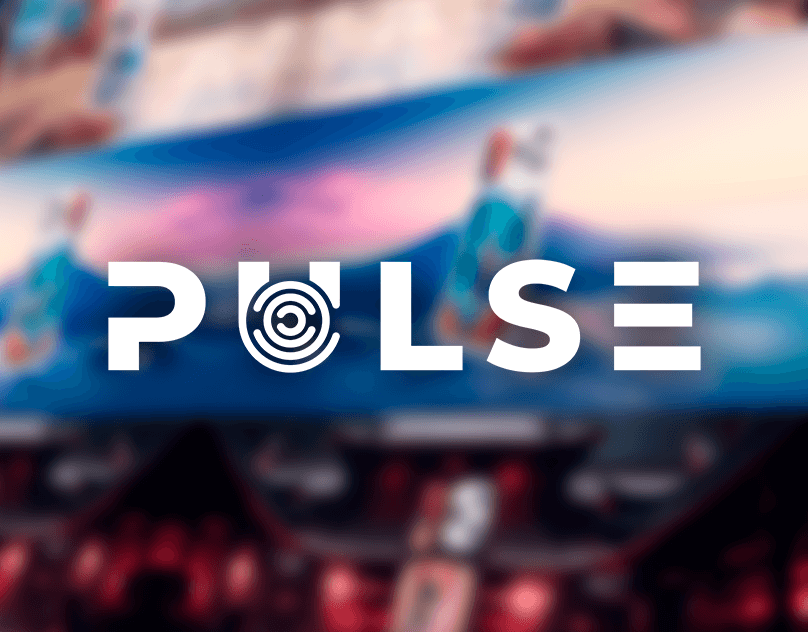
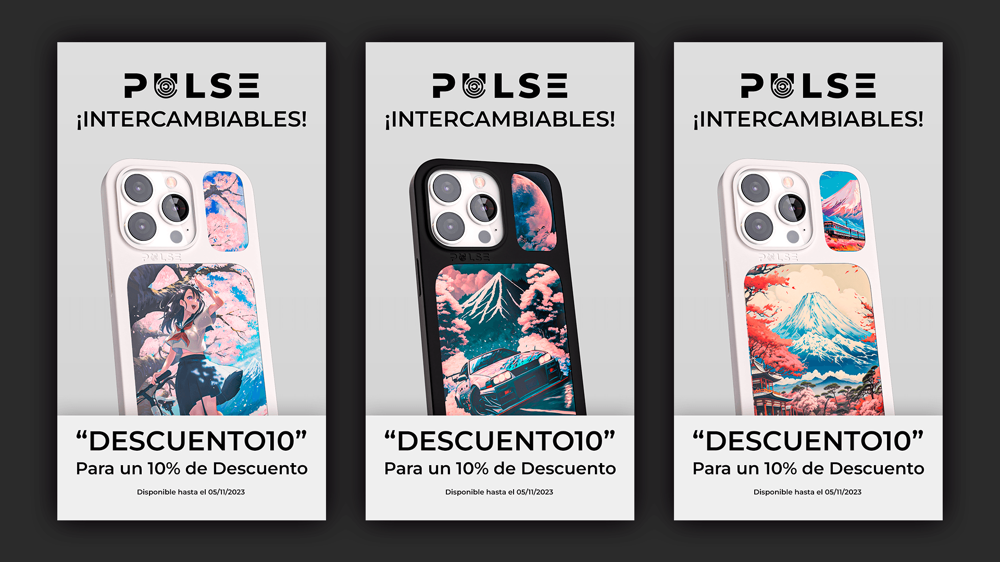
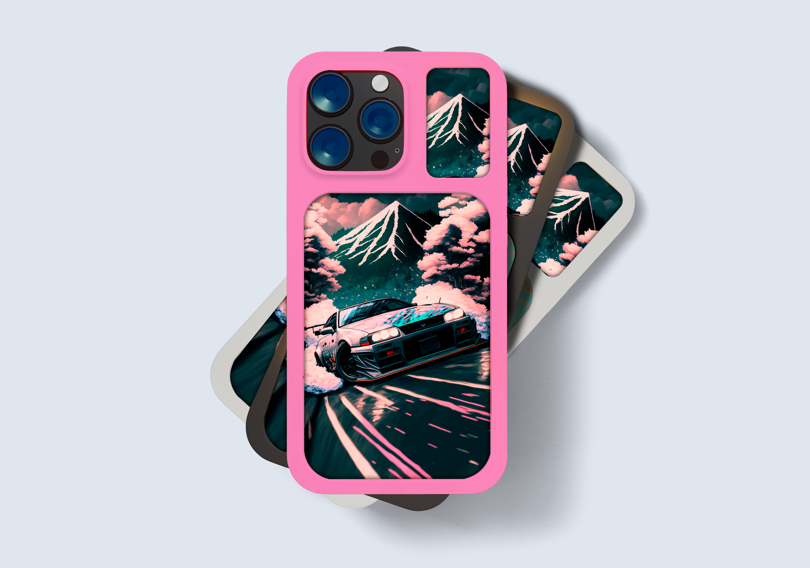
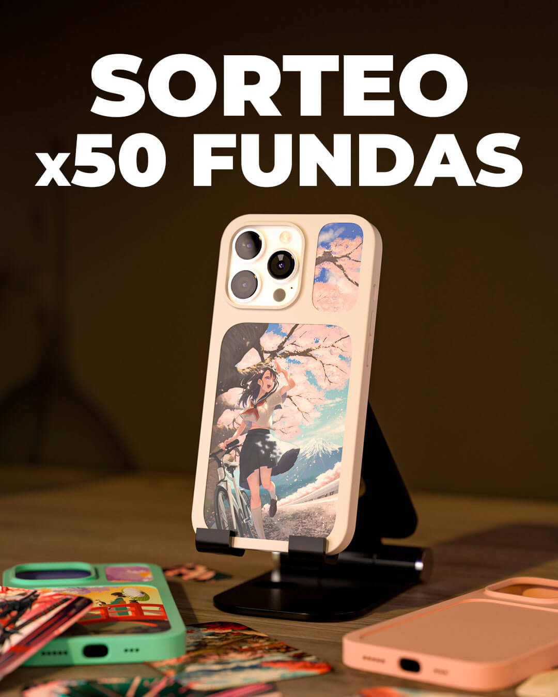

El Reto
El principal desafío con Be Pulse fue traducir un producto físico altamente interactivo —fundas para smartphone con un sistema modular de doble espacio para "chapitas" intercambiables— en una experiencia digital visualmente atractiva y fácil de entender al instante. Como diseñador gráfico de la marca, asumí la responsabilidad de conceptualizar y desarrollar toda la línea de assets publicitarios para redes, anuncios de alto rendimiento (Social Ads) y la interfaz visual de su plataforma web de e-commerce.

Visualizando la Modularidad: El Sistema de Chapitas
El corazón de Be Pulse es la personalización extrema basada en distintas temáticas y personajes. Para comunicar este concepto de forma clara, diseñé un sistema de plantillas visuales donde las texturas de las fundas y los diseños de las chapitas se fusionaban de manera limpia pero potente. La dirección de arte se centró en destacar la versatilidad: cómo un mismo accesorio puede cambiar por completo según la combinación elegida, dándole un peso fundamental a la tipografía y a los contrastes cromáticos fuertes para captar la atención en el scroll rápido de los usuarios.

Estrategia en Redes y Social Ads de Alto Impacto
Para calentar el mercado y generar conversión directa, desarrollé una batería completa de formatos publicitarios para campañas de Meta Ads y contenido orgánico para el feed. El enfoque gráfico combinó la fotografía de producto limpia con composiciones tipográficas agresivas que explicaban el mecanismo de los dos huecos intercambiables en menos de tres segundos. Diseñé portadas, banners fijos, carruseles dinámicos y composiciones en formato vertical optimizadas para Stories y Reels, logrando un lenguaje visual nativo que conectó de inmediato con el público joven e interesado en la cultura pop y las tendencias.

Infraestructura Web y Elementos de Conversión
La experiencia de marca debía ser impecable desde el anuncio hasta el carrito de compra. Me encargué del diseño de los elementos clave de la tienda online: desde los headers principales de la web hasta los banners de colección y los recursos gráficos interactivos que guiaban al usuario en el proceso de "crear su propia combinación". Cada asset web fue optimizado a nivel de peso y exportación, asegurando que la fuerza visual de los colores no afectara a la velocidad de carga de la página.

El Impacto Comercial
El resultado de este ecosistema visual fue el posicionamiento sólido de Be Pulse como una marca fresca, moderna y con identidad propia en el mercado saturado de los accesorios de telefonía. La consistencia gráfica entre las campañas publicitarias y la web no solo elevó el valor percibido del producto, sino que convirtió el acto de comprar una funda en el inicio de una colección de complementos personalizada, creando una comunidad activa que comparte con orgullo sus combinaciones en el entorno digital.